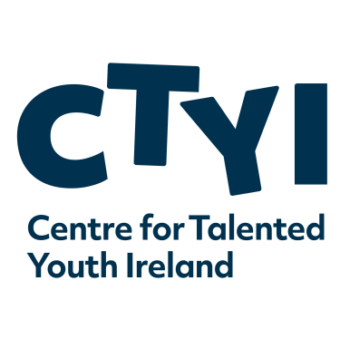
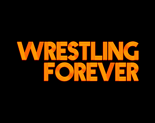
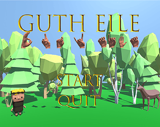
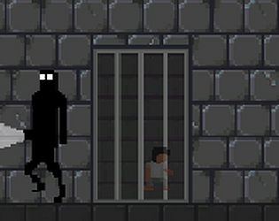
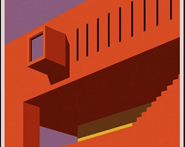

Programming Projects
This is a collection of different projects I have made through various methods. They mainly serve as proof of concepts for ideas or as practice to teach myself new skills.
This is a collection of different projects I have made through various methods. They mainly serve as proof of concepts for ideas or as practice to teach myself new skills.
Projects focused on teaching, learner support and classroom delivery.
Projects that reduce manual work and streamline repetitive tasks.
Interactive builds and game-related prototypes for engagement.
Showing all projects. Select a panel above to filter.
A proof-of-concept Electron app providing offline speech-to-text transcription for languages underserved by native Windows dictation tools. Built with Whisper for transcription, featuring manual language selection and Windows packaging via electron-builder.
A desktop Electron app for tracking learner progress across QQI modules and tasks, with local file storage and Windows installer support. Built for use in a Youthreach classroom context, targeting educators who need a lightweight, offline-first progress management tool.
An automated Excel workbook for generating individual learner marking sheets and assessment briefs for QQI Level 4 Word Processing (4N1123). Built with Office Scripts (TypeScript) and a VBA macro, reducing manual assessment prep across two graded components — Collection of Work and Examination.

A collection of teaching examples built in Unity (C#) for introducing basic game design concepts to young learners at a DCU CTYI summer camp in 2022.

A short narrative prototype exploring the role of a "jobber" in professional wrestling. Developed as a TU Dublin group project, where I worked as Producer, coordinating delivery milestones and team workflow.

A learning-focused game prototype centred on Irish Sign Language, designed to integrate education directly into core gameplay mechanics. Produced as a TU Dublin group project for the Unity Game-Based Learning Competition and later invited for presentation at the Irish Game-Based Learning Conference.

A 2D platformer developed as part of a TU Dublin group project, focused on communicating social themes through environmental storytelling and player progression. The project explored how mechanics and narrative can work together to support serious subject matter.

A Unity 3D environment study recreating key visual elements from a San Antonio Library poster as a real-time scene. Completed during my TU Dublin Level 8 Game Design studies to strengthen composition, lighting, and modelling workflows in-engine.